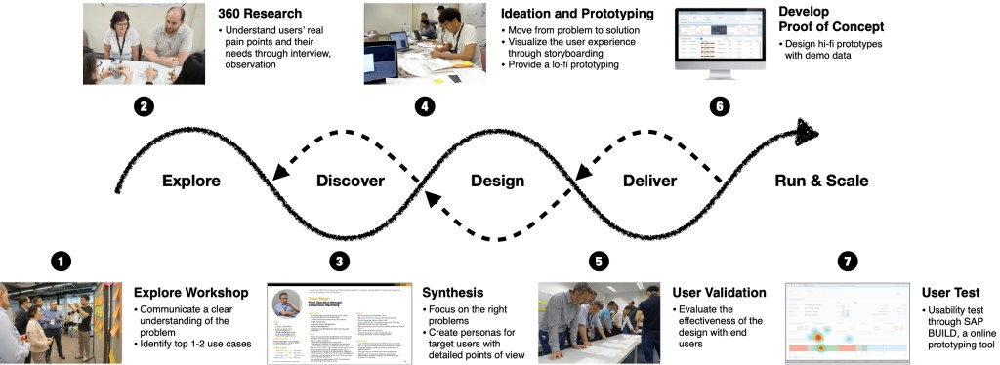
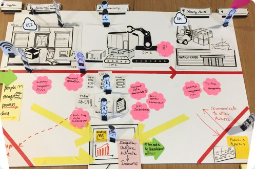
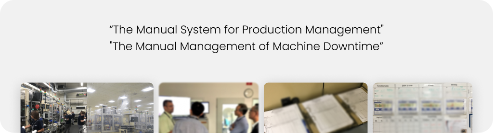
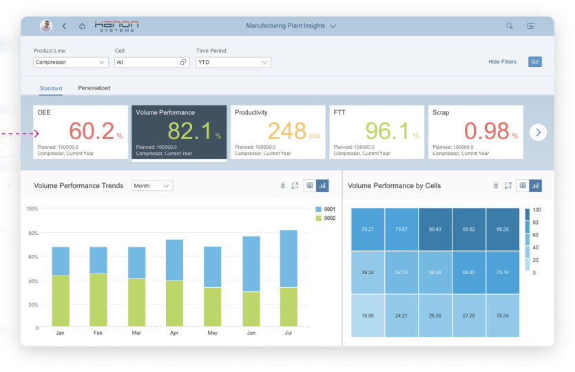
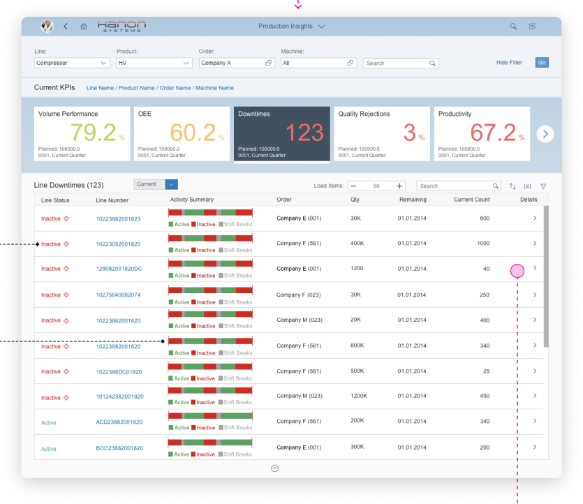
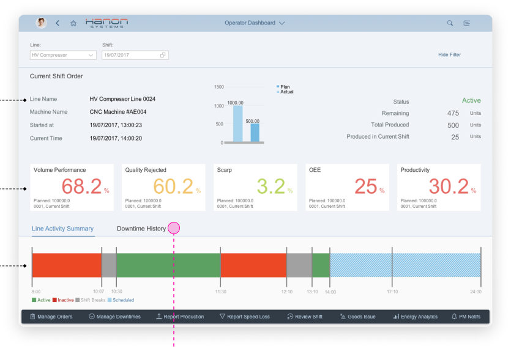
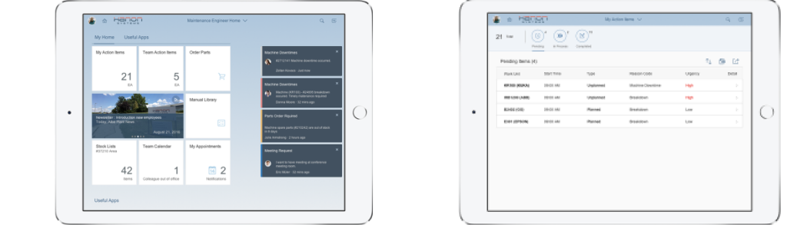

Real-time manufacturing insight
Lack of visibility was holding back productivity at Hanon Systems. Working with manufacturing experts, a solution specialist, a project manager and another designer, I helped digitize their production system — from workshop to user test.
- Role
- User research, prototyping, UI design
- Team
- Project manager, solution expert, 2 industry experts, 2 UX designers
- Tools
- Axure, SAP Build
- Duration
- 3 months

No visibility, no prediction
- The client wanted to evaluate equipment effectiveness digitally, for better insight into plant performance.
- They wanted predictive machine maintenance to improve scheduling and minimize downtime.
I went through the whole process — Explore workshop, field research, synthesis, ideation, user validation and user testing.

With the CIO, CHRO, VP of product group and operations leaders, I facilitated sessions to identify business challenges and priorities. Key insights: inaccurate data and human error, no real-time visibility of machine status, no way to predict breakdowns, and no maintenance knowledge process.

I observed the pilot plant and ran ten interviews across operations, production, engineering, maintenance and IT.

Three issues in the production process
- Lack of visibilityWorkers monitored machines manually, which delayed maintenance.
- Less productivityWithout predicting downtime, production goals were hard to meet.
- Less data accuracyManual reports were slow to produce and often inaccurate.
Connect, visualize and trust the data
How might we increase manufacturing productivity and efficiency by integrating data?
- Connect live machining and production-order data from all production units.
- Visualize real-time line performance so employees can act on it.
- Ensure data accuracy and replace analog reports with dashboards.
Five apps for five target users
Plant-level KPIs — OEE, volume performance, productivity, first-time-through and scrap — with trends by month and by cell.

Line KPIs and a downtime list with activity summaries, so managers can see which lines are inactive and why.

The current shift order, machine KPIs and a line-activity timeline, with quick actions to manage downtime and report production.

Team leaders get downtime notifications and assign available engineers; engineers receive tasks and work through their action items on a tablet.

Real-time decisions on the shop floor
- Real-time OEE visualization and downtime reasoning.
- Increased overall productivity and efficiency, effectively meeting customer needs.
- Operators empowered to make real-time decisions to adjust production.
- Less desk work and fewer trips between shop floor and office.
- SAP Innovation Awards 2019 finalist.
“With better data about the health of our equipment, we can improve the way we schedule our maintenance activities and minimize equipment downtime.”
Reflections
Through the manufacturer's digitalization, I understood the real concerns and barriers from business and stakeholder perspectives — how roles across the factory are interconnected and affect each other's work, and how the maturity of a production system shapes individual employees' quality of life.